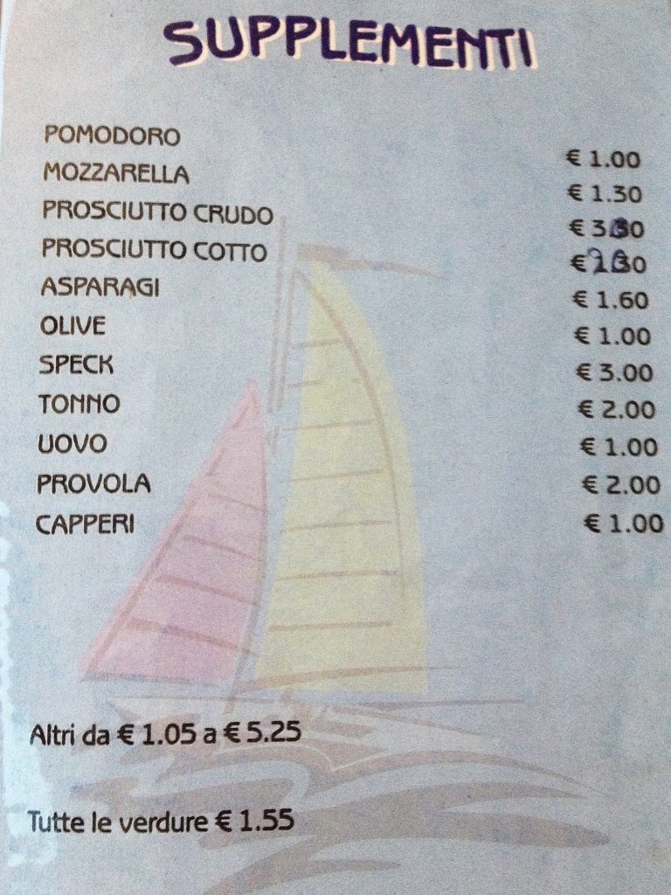

Photo by Francesca Tosolini
As you may imagine, the pizzerie are establishments specializing in pizza. You may find that many of them offer not only pizza but regular dinners as well (therefore are called pizzeria ristorante). What you really need to know is that a good pizza must be cooked in a wood-burning oven (forno a legna) and doesn't have to have a very oily crust. While not all Italian pizzerias offer exactly the same assortment of pizzas, all pizzerias have a section in their menu called supplementi. Supplementi are the extra ingredients that you can add to your pizza in order to customize it to your own taste. Therefore you can have extra mozzarella, or maybe extra cured ham (prosciutto crudo), or even, if you want, extra olives (olive). So, the next time you will order a pizza in Italy you can say "Vorrei una pizza x con supplemento di y". Enjoy. {Part of this article is an excerpt from chapter 3 “Italian cuisine and food establishments” of the eBook “Italy from the Inside. A native Italian reveals the secrets of traveling in Italy”}